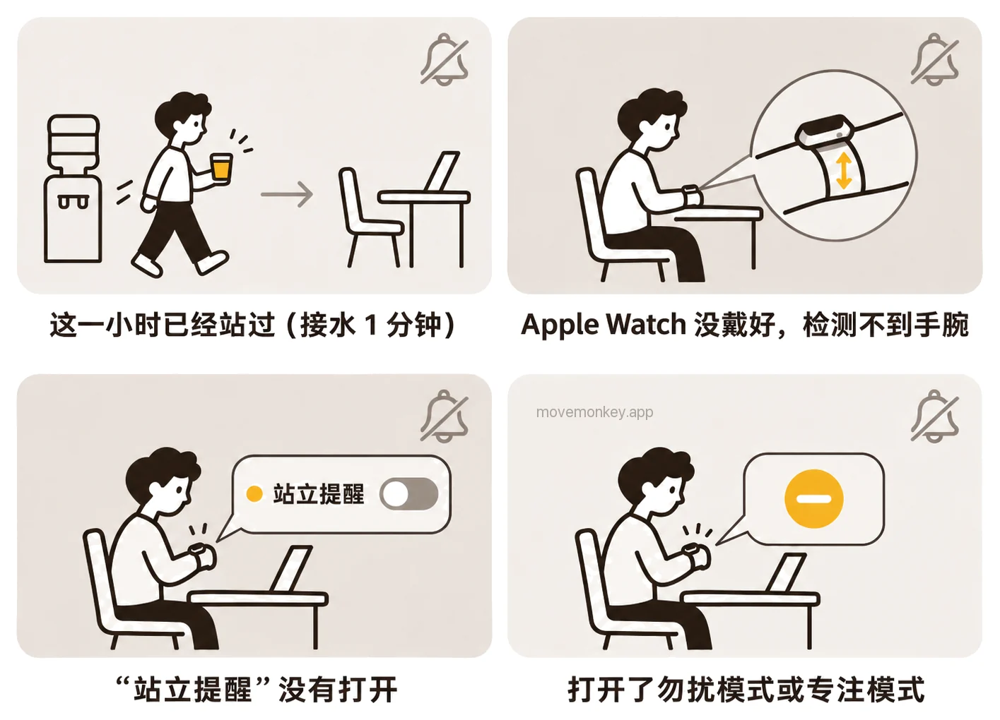
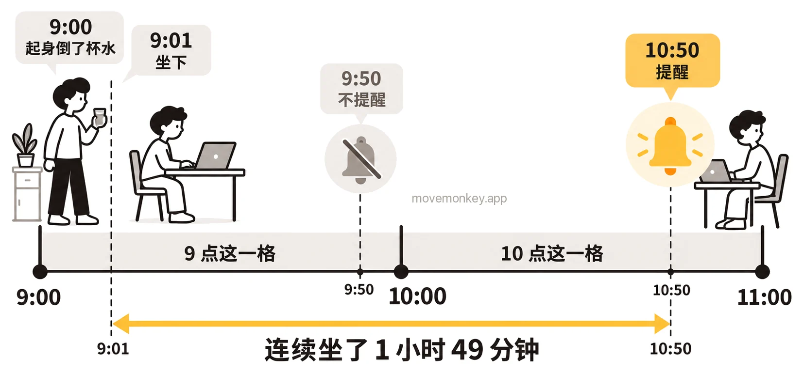

Apple Watch 站立提醒开着却不提醒，是怎么回事？
下面按 Apple 的说明、用户的反馈和我们的测试，列出苹果手表（Apple Watch）站立提醒开着却没有提醒的几种原因，以及怎么检查。

Apple Watch 站立提醒开着却不提醒，通常是什么原因？
通常是因为这一小时已经算站过了，哪怕你只是起身接杯水、活动了 1 分钟。
Apple Watch 按整点一小时一小时地算站立：一小时里站起来并活动至少 1 分钟，这一小时就算站过，记为 1 个站立小时。[1]站立目标是一天要有几个站立小时，可以设为 6 到 16 小时。[2]站立提醒是在这一小时还没站过时，到第 50 分钟提醒你。[3]
所以，连续坐了一个多小时，也可能收不到提醒：9:00 起身倒了杯水，9:01 坐下，9 点这一小时已经算站过，9:50 不会提醒；要到 10:50 才提醒，这时已经连续坐了 1 小时 49 分钟，见 Apple Watch 站立提醒是怎么算时间的？

如果想在连续坐久了时被提醒，可以考虑久坐提醒 App MoveMonkey，它从你上次起身开始计时。
Apple Watch 站立提醒在哪里打开？
在 iPhone 上的 Apple Watch App 里，依次轻点“我的手表”、“App”和“健身记录”，确认“站立提醒”已打开。
也可以在 Apple Watch 上前往“设置” App，轻点“健身记录”，打开“站立提醒”。[4]
如果设定了使用轮椅，“站立”圆环会变成“转动”圆环[1]，这个开关也会叫作“转动提醒”[4]。
Apple Watch 没戴好，会收不到站立提醒吗？
可能会。Apple 的说明：Apple Watch 无法检测到它已戴在你的手腕上时，可能出现的问题包括“Apple Watch 不提供站立提醒”。[5]
Apple 列出的情况包括：Apple Watch 戴得太松或太紧，或者和手腕之间隔着手链、衬衫袖子。Apple 建议调整表带，让 Apple Watch 背面的感应器与皮肤接触，并说明“手表应舒适贴合”。[5]
开了勿扰模式、专注模式或静音模式，Apple Watch 还会提醒站立吗？
勿扰模式下不会提醒；静音模式和剧院模式下没有声音，若允许触感反馈，仍会轻点手腕；专注模式下可能收不到。
Apple 把“健身记录提醒事项”列为 Apple Watch 上的一种通知。[6]几种静音方式对通知的影响，Apple 的说明如下[7]：
Apple Watch 各种静音方式下，通知的声效反馈、触感反馈和视觉通知
| 模式 | 声效反馈 | 触感反馈 | 视觉通知 |
|---|---|---|---|
| 静音模式 | 关闭 | 打开（若允许） | 打开 |
| 剧院模式 | 关闭 | 打开（若允许） | 关闭 |
| 勿扰模式 | 关闭 | 关闭 | 关闭 |
| 专注模式 | 关闭（设定的例外情况除外） | ||
2026 年 10 月，我们在 watchOS 27.0.1 上测试：睡眠专注模式设成“允许下列通知”、名单里只有“闹钟”和“睡眠”时，佩戴 Apple Watch 一直坐着，到第 50 分钟也没有收到站立提醒；不打开任何专注模式，同样一直坐着，第 50 分钟收到了站立提醒。我们还发现，站立提醒不会像其他 App 的通知那样留在通知中心里，所以被静音的那次，事后也找不到。两种设置方式的区别，见 开了睡眠模式，为什么 Apple Watch 还有站立提醒？
Apple Watch 站立提醒太轻，没注意到怎么办？
可以把触感调强：在 Apple Watch 上前往“设置” App，轻点“声效与触感反馈”，把“触感反馈”设为“强”。[8]
也可以在 iPhone 上调整：前往 Apple Watch App，轻点“我的手表”，然后轻点“声效与触感反馈”。[8]
以上都检查过，Apple Watch 还是不提醒站立，怎么办？
有用户建议把“站立提醒”关闭再打开；也有用户在 watchOS 26 上这样做后，仍然收不到提醒。[9]
开关的位置见上文站立提醒在哪里打开。

久坐提醒 App · 现已在 App Store 推出
MoveMonkey：从上次起身开始算的久坐提醒
从你上次起身开始，坐满你设定的时间（30、45、60 或 90 分钟），小猴子才会提醒你。适用于 iPhone 和 Apple Watch，只用 iPhone 也可以；走动或站立后自动重新计时。
早上等你起身后才开始计时，午休可以设为不提醒，提醒时段也由你设定。
轻点“起身动动”，只要走上 1 分钟，小猴子还会为你喝彩。
核心功能永久免费，没有广告。
看更详细的介绍 →